Wasze 4 części zestawu
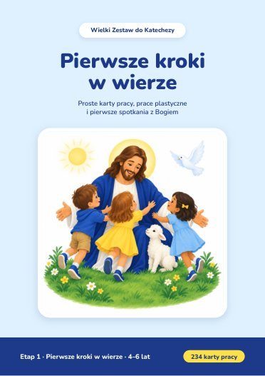
4–6 latPierwsze kroki w wierze
234 proste karty pracy dla najmłodszych: kolorowanki, labirynty, łączenie kropek, wycinanki i małe prace plastyczne. 237 stron.
Pobierz PDFOtwórz w przeglądarce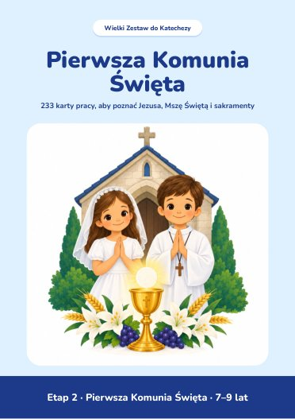
7–9 latPierwsza Komunia Święta
233 karty pracy, aby poznać Jezusa, Mszę Świętą i sakramenty, z rozwiązaniami. 266 stron.
Pobierz PDFOtwórz w przeglądarce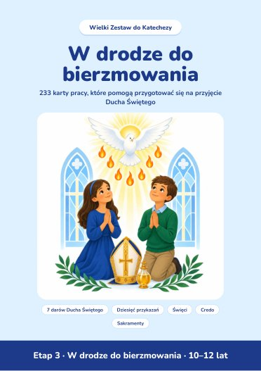
10–12 latW drodze do bierzmowania
233 karty pracy, które pomogą przygotować się do przyjęcia Ducha Świętego, z rozwiązaniami. 245 stron.
Pobierz PDFOtwórz w przeglądarce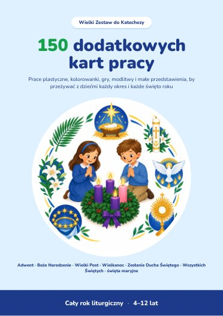
4–12 lat150 dodatkowych kart pracy
Okresy i święta roku liturgicznego: Adwent, Boże Narodzenie, Wielki Post, Wielkanoc, Zesłanie Ducha Świętego, Wszystkich Świętych i święta maryjne. 152 strony.
Pobierz PDFOtwórz w przeglądarceWasze 7 bonusów
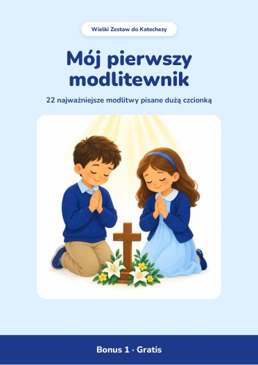
Bonus 1Mój pierwszy modlitewnik
22 najważniejsze modlitwy zapisane dużą czcionką. 23 strony.
Pobierz PDFOtwórz w przeglądarce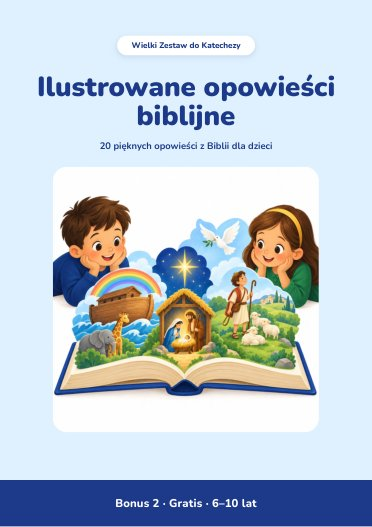
Bonus 2Ilustrowane opowieści biblijne
20 opowieści z Biblii do czytania z dziećmi w wieku 6–10 lat. 43 strony.
Pobierz PDFOtwórz w przeglądarce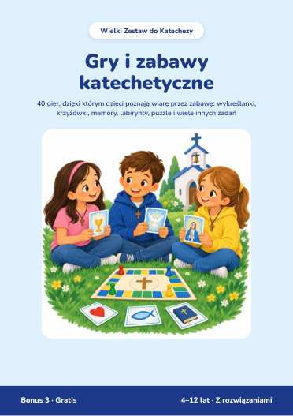
Bonus 3Gry i zabawy katechetyczne
40 gier: wykreślanki, krzyżówki, labirynty, memory i quizy, z rozwiązaniami. 50 stron.
Pobierz PDFOtwórz w przeglądarce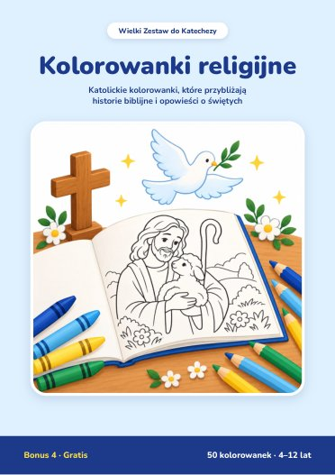
Bonus 4Kolorowanki religijne
50 kolorowanek z historiami biblijnymi i postaciami świętych. 51 stron.
Pobierz PDFOtwórz w przeglądarce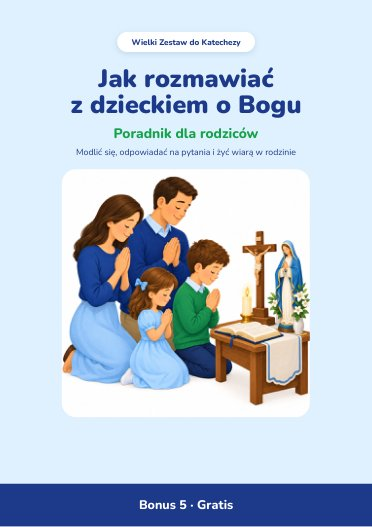
Bonus 5Jak rozmawiać z dzieckiem o Bogu
Poradnik dla rodziców: modlitwa w rodzinie, odpowiedzi na trudne pytania, pomysły dla każdego wieku. 22 strony.
Pobierz PDFOtwórz w przeglądarce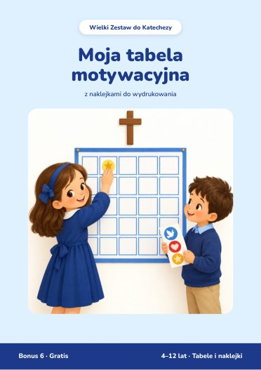
Bonus 6Moja tabela motywacyjna
Tabele na tydzień i na miesiąc, droga adwentowa i wielkopostna, naklejki i dyplom. 13 stron.
Pobierz PDFOtwórz w przeglądarce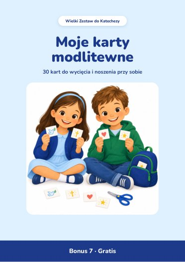
Bonus 7Moje karty modlitewne
30 kart do wycięcia: modlitwy, słowa z Biblii i myśli świętych. 8 stron.
Pobierz PDFOtwórz w przeglądarceOd czego zacząć
- Pobierzcie część dopasowaną do wieku dziecka: Pierwsze kroki w wierze, Pierwsza Komunia Święta albo W drodze do bierzmowania.
- Drukujcie strony w formacie A4, w skali 100% („rzeczywisty rozmiar” w oknie drukowania). Każda karta pracy mieści się na jednej stronie.
- Trzymajcie bonusy pod ręką: modlitwy, opowieści i gry przydadzą się na każdym spotkaniu.
Do użytku osobistego, w rodzinie, w parafii lub w szkole. Odsprzedaż i dalsze rozpowszechnianie są zabronione.